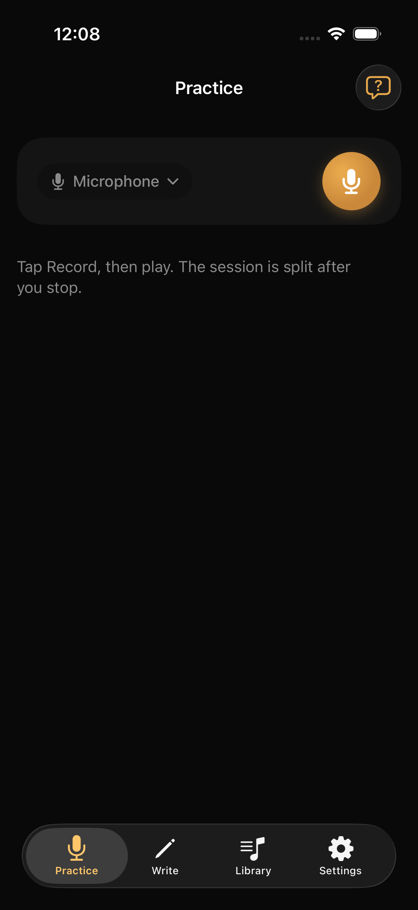
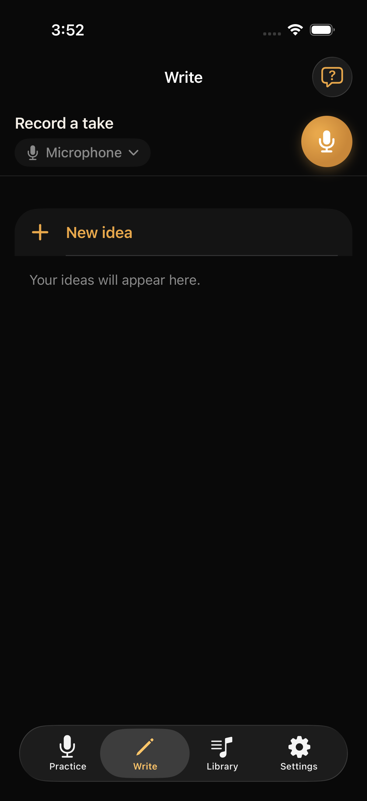
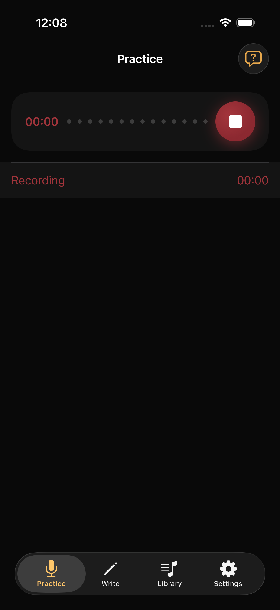
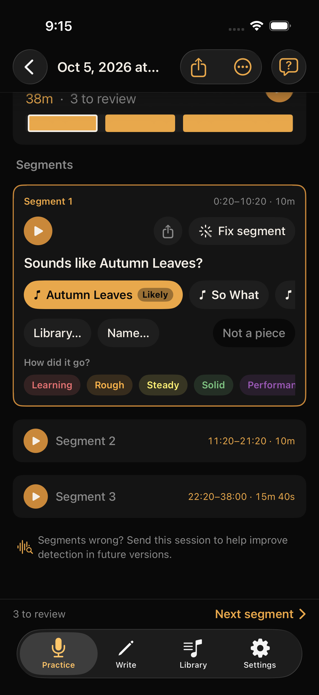
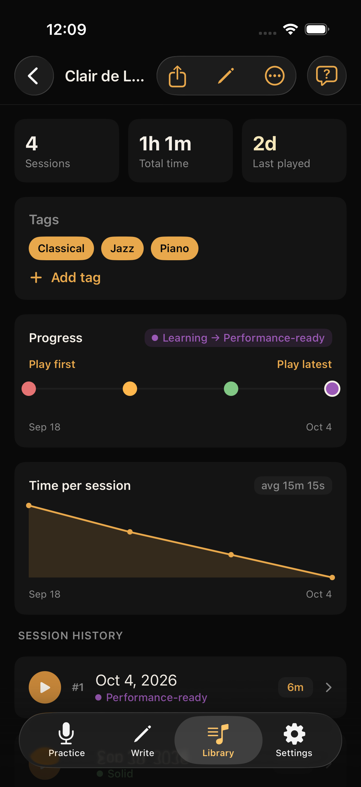
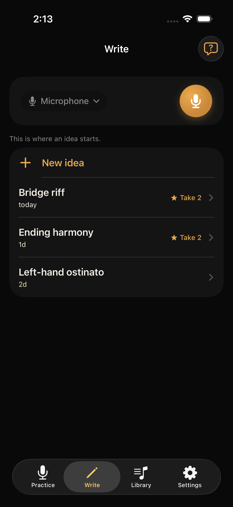
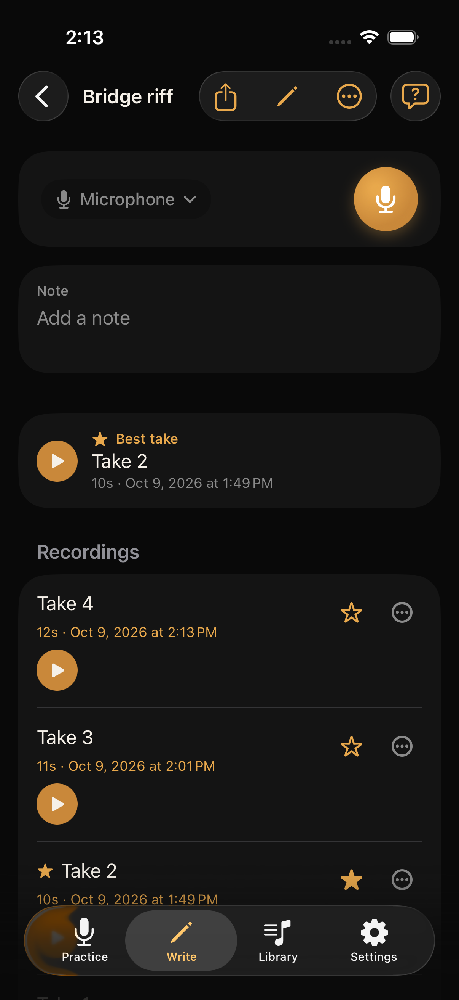
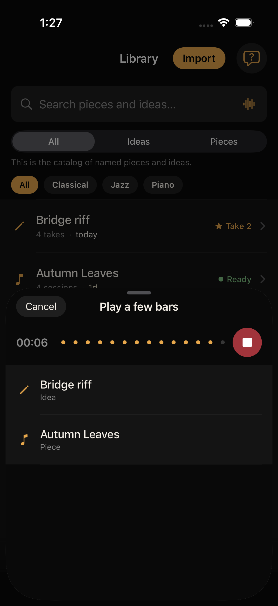

Practice
Where you put in the work
Scales, difficult sections, and the gruntwork that makes a piece take shape. Woodshed gets out of your way while you play, then catalogs your session to make it easy to listen to and analyze later.

Woodshed helps you practice more effectively,
and capture song ideas the moment you have them.
Two modes. One library.
Practice
Scales, difficult sections, and the gruntwork that makes a piece take shape. Woodshed gets out of your way while you play, then catalogs your session to make it easy to listen to and analyze later.

Write
An idea comes to mind. Record it, name it, refine it with more takes, and attach notes or lyrics to it. Just enough structure to shape an idea into a song. Not a DAW, not a pile of voice memos.

How it works
Tap once and play. No need to touch your phone again until you’re done playing.
Woodshed breaks your session into segments, and suggests which pieces you played. You confirm later (whenever convenient).
Listen to and rate your performances. Figure out what you need to work on next.
Open a piece and listen across weeks as your ratings climb.



One tap, then play.
If you want.
Create more takes.
The version you want to come back to or share.


Library
Search your library musically. Matches show as you play.

Acoustic and digital instruments supported natively.
Everything lives on your phone and backs up to your iCloud. No account to manage.
Have a bunch of audio files or a pile of voice memos? Just share them to Woodshed; the app will ingest and help you catalog them.
Send your best takes to friends or your ideas to collaborators.
On the App Store.